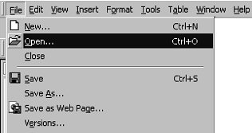
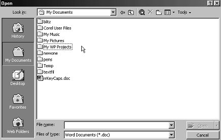
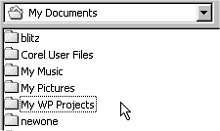
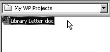
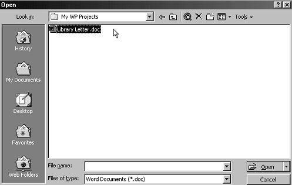

Free
computer Tutorials
|
Free
computer Tutorials
|
|
 home home |
|
|||||
How to open a File in Microsoft Word |
||||||
|
Opening Microsoft Word DocumentsWe'll shortly add an address to the top of our Library Complaint letter. Before we do that, we'll learn how to open a file. After all, you might have closed down Microsoft Word, or your computer might have crashed. The result being that you no longer have your library letter loaded into Word. So here's how to Open a file you have saved, and want to work on again. From the File menu, click Open:  The Open dialogue box appears, and looks like the image below:  The Open dialogue box looks very similar to the Save As dialogue box. "Save in", "File name", and "Files of type" work in exactly the same way as the Save As dialogue box. Notice, though that the File name text box is blank, and the Open button is not available. It has been greyed out. The reason that the Open button is greyed out, and therefore not available, is that text box is empty. Once you select a file, the Open button will be ready for us. But the text box is empty because no file has been selected. A file is selected from the larger white area in the middle. Clicking on the file once with the left hand mouse button will select a file. In the previous image, there was only one file available for selection - a document called "rrKeyCaps.doc". That is not the one we want. To locate the file we want, we need to open the folder called "My WP Projects". Because that's where we saved it. You can see from the image that this folder is in the list of folders, just below the folder called My Pictures:  You can see also that we are in the folder called My Documents. To open up the folder we want, simply double click it. This will take us inside the My WP Projects:  The whole Open dialogue box now looks like this:  The file we want, Library Letter, has been clicked on. As a result, the Open button is no longer greyed out. We can go ahead and click it. When we do, our letter will open in Microsoft Word. To recap then on how to open a file. Do the following
OK, now that you know how to Open a file, we can start adding the address to our letter. Learn how to add an address to a letter --> <--Back to the Word Contents Page |